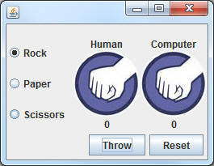
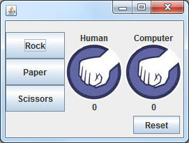
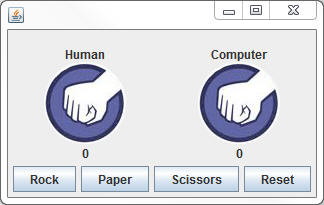

Human vs. Machine Rock Paper Scissors
Now that you've got the basics of a Rock-Paper-Scissors game, create a similar game that allows the human to select what they throw.



You may copy my layout or choose your own, but you
must have the following:
Pictures for the player and the
computer with labels to tell us which is which.
Some way for the human to choose
what they want. This could be JButtons or JRadioButtons.
Labels to keep score and announce
the winner.
A Reset button.